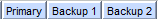

#Select the first output from ME7000 front-end #This routine assume the main gui is alread launch and will click on Processing tab and select Output Group number #inputs: optional: outputGroup=[1..] Output Group Number. Default will be 1, the first output group #Usage: select_output_group.sikuli ############################################################### #common code for every sikuli code. Do not remove this section from me7klib import * ############################################################### #YOUR code start here ############################################################### #This is your check for the inputs that you are expecting. def Check_args(): #checking for optional arguments if not Get_arg('outputGroup'): Set_arg('outputGroup', '1') Print_debug('outputGroup is not defined. Will use 1 as default.') Check_args() ############################################################ #Main program definitions code start from this point #Any global variables here Settings.OcrTextSearch=True Settings.OcrTextRead=True #Any definitions are here def Select_Outputs(): #first need to select Output group tabs Set_arg('tabName', 'Processing') runScript(sikuliScriptDir + 'nav_tabs') wait() myoutput = (Get_arg('outputGroup')) if int(myoutput) == 1: myoffset = 18 click(Pattern().targetOffset(-50,int(myoutput)*myoffset)) else: Exit_program('Invalid port number: ' + myoutput) ####################################################### #Main program flow Select_Outputs()